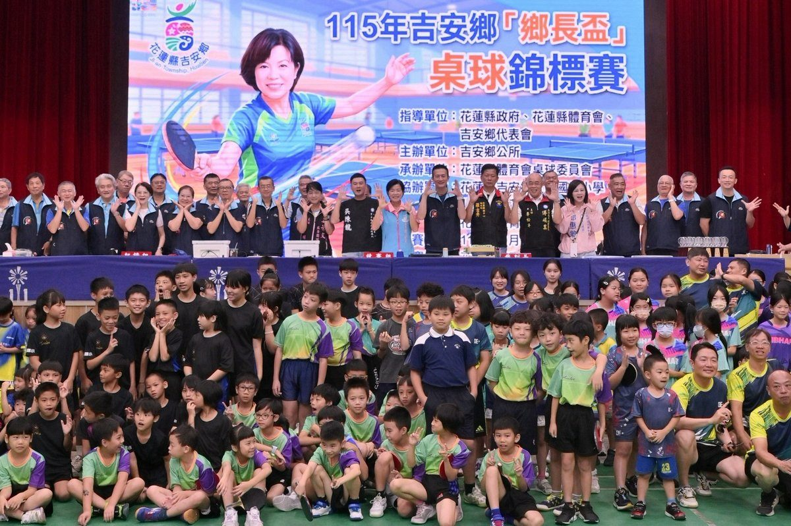

吉安鄉長盃桌球賽開打 游淑貞推全齡運動打造樂活城市

可樂電子報小編/編輯
為推廣全民運動風氣並扎根在地桌球人才，花蓮縣吉安鄉公所攜手花蓮縣體育會桌球委員會，今（3）日在宜昌國小活動中心盛大舉辦第七屆「鄉長盃」桌球錦標賽。本屆賽事吸引來自全縣各鄉鎮及外地多達66支隊伍、近600名選手齊聚揮拍切磋，年齡層自國小學童橫跨至社會組青壯年與長者，各路好手齊聚一堂以球會友，場邊親友團加油聲此起彼落，氣氛熱血沸騰。

吉安「鄉長盃」桌球賽連續舉辦七年，賽事規模與參與熱度逐年擴大，已成為花蓮地方年度體育指標盛事。今年參賽隊伍涵蓋玉里、鳳林、新城、秀林、花蓮市及吉安鄉等地，展現高度號召力；其中，花蓮縣桌球重點培訓學校鑄強國小，上月甫於「總統盃」國小組團體賽勇奪全國季軍，此次亦組隊參賽切磋球技，大幅提升賽事張力。賽制規劃團體賽與個人對決，分為社會組、國小高年級男女子組及中年級男女子組等5大組別，不僅考驗選手戰術默契，更提供學童展現平日苦練成果的最佳舞台。

賽事由吉安鄉長游淑貞、花蓮縣議會副議長徐雪玉、花蓮縣體育會桌球委員會主委徐榮鴻、縣府北區服務中心副主任羅吉秀及立委傅崐萁服務處主任李松年共同開球揭幕。徐榮鴻主委感謝游鄉長長期深耕基層桌球運動，促使多所校園相繼成立社團扎根；游淑貞鄉長則指出，桌球是老少咸宜、兼具益智健身的全齡運動，特別感謝代表會、體育會、桌協、長青協會與各校師長協力促成，讓不同世代在球場共融互動，具體實踐老幼共學與全民運動藍圖。

賽事歷經一整天激戰後舉行頒獎閉幕，各組優勝名單揭曉：社會組由「突破A+班龍」奪冠，花蓮桌協摘亞，「我是奶龍」與「亞立桌球館紅」並列季軍；國小高年級男生組由北昌勁稱王、鑄強紅居次；國小高年級女生組由東華附小綠水靈封后、北昌紅獲亞；國小中年級男生組由鑄強藍與鑄強紅包辦冠亞軍；國小中年級女生組由佳民粉奪冠、北昌粉摘亞。游淑貞親自頒獎嘉勉小選手與獲獎隊伍，眾人開心合影相約明年再戰，吉安鄉公所未來亦將持續推展全齡體育，打造健康宜居樂活城市。

▶ 延伸觀看
📺 相關報導影片：點此於 YouTube 觀看完整報導